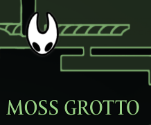
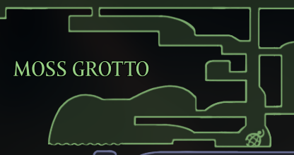

Step 1
How to insert our map
Open your in-game map, and press Shift + Win + S to screenshot the parts of the map you want to bring in.
Step 2
Put it where it belongs
This game has no built-in world map to match against, so you place each screenshot yourself:
A small toolbar floats above the screenshot with everything you need:
- 1Drag the screenshot until it lines up with what's already there (Shift+scroll or the − / + buttons resize it).
- 2Press ✓ Place it — or ✓ No pin, which puts it down and stops there, for a screenshot that's only more map.
The screenshot lands under your mouse pointer, so point at roughly where it belongs before pasting. It tries to line itself up the moment you paste, so there's often nothing to do but confirm. Auto‑align tries again after you've dragged it closer, and Difference (D) blacks out everything that already matches so you can see the last pixel of error. Neither ever resizes the screenshot.
Arrow keys nudge it one pixel at a time (Shift for ten) — always onto the map's own pixel grid, so a perfect fit is always reachable. Ctrl+Z steps back through every move you've made, including one the app made for you.
Everything after the first screenshot keeps the size you used last time, so usually you only drag.
Step 3
Then mark where you are
Once the screenshot lands, click your player's spot on the map to drop a pin there — give it a type and a note, or skip the step entirely. Panning the map first is free: dragging to look around never drops the pin, only a click does.
Step 2
Two kinds of paste
You can paste two types of images:
- 1A map screenshot updates the map shown on the site.
- 2A player screenshot adds a pin at your current location.

Player screenshot → a pin

Map screenshot → updates the map
Tip
Landing on your spot
Pasting a player screenshot? Equip the Compass so your marker shows on the map and the pin drops on your exact spot. Without it, just move the pin into place by hand afterward.
Your marker is visible
 Equip the Compass
Equip the Compass
Step 4
Keep a location name in frame
Whatever you screenshot, make sure at least one area name is visible — the site reads that name to place things.
 “Craw Lake” is in frame — that name anchors it.
Step 5
“Craw Lake” is in frame — that name anchors it.
Step 5
Remember what's there
Once a pin is placed, you can attach a screenshot of what you're looking at — so you'll better remember what was there when you come back.
Photographed the place before you opened the map? Paste it anyway and pick 📷 A picture of what's here. It waits in the corner, and the next pin you add takes it — no second trip.
Step 4
Remember what's there
Once a pin is placed, you can attach a screenshot of what you're looking at — so you'll better remember what was there when you come back.
Photographed the place before you opened the map? Hover the 📷 Picture for the next pin field at the bottom of the screen and paste it there. It waits there, and the next pin you add takes it — no second trip. Paste anywhere else and it goes on the map instead, so you're never asked which you meant.
Step 6
Place a pin by hand
Don't have a screenshot? Press 📍 Add pin at the top, then click the spot on the map. Changed your mind? Right-click (or Esc) to cancel.
Carry the pin out to the edge of the screen instead and a grid of slots lights up along the rim. Drop it in one and it becomes a persistent pin: square, and nailed to your screen rather than to the map, so it stays in sight however far you pan or zoom. Good for a reminder you want in front of you the whole time. The slots keep clear of the buttons, so a pin never lands on one.
The pin's own menu has the same switch — Keep on screen — for changing your mind later, either way. Drag both kinds the same way: click once, then drag.
Tip
The Lasso
Next to Add pin, press Lasso and draw a loop around anything on the map:
- 1Loop around part of the map and it lifts off — screenshots and the pins on them together — to drag where it belongs (for two areas that turn out to connect).
- 2Loop around only pins and you move just those.
- 3Either way, 🗑 Delete in the toolbar removes what you lassoed instead.
Everything is one Ctrl+Z / Undo away.
Tip
Map layers
Some games draw more than one map over the same ground — an upper and a lower floor, an interior, a mirrored world. Press ＋ Add map layer at the top left and you get a second map to paste onto.
- 1Click a layer to open it: it comes to the front at full strength and the others dim behind it, so you can still see what you're lining up against.
- 2A screenshot lands on the layer you were on when you pasted it — switch layers while you're dragging it and you only change what you can see, never where it goes.
- 3Pins belong to layers too. The ones on other layers are dimmed with their map; hover one to read it anyway.
Every layer shares the same coordinates, so a spot on one is the same spot on all of them.
Layers aren't free — each one is a full-size map redrawn every frame. If a big stacked map starts to feel heavy, or it tells you it can't grow any further, press Halve detail in the top bar: the whole map is redrawn at half its stored size, which frees four times the room to grow and makes it that much quicker to draw. Everything stays exactly where it is, and screenshots you paste afterwards line up just the same.